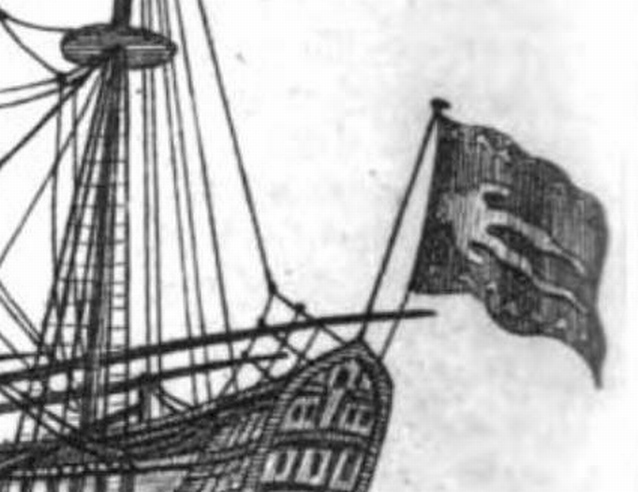

Под знаменем … пряничного человека?
Загадка ― тем и хороша,
что,
может быть,
неразрешима.
Н.Ушаков. Пушкин (1937)
Показалось мне немного странным, что при обсуждении загадки о корабле с паломниками никто не обратил внимания на необычный кормовой флаг этого корабля

«Фэншуй» в носу привлек внимание, а флаг – нет. А между тем, изображение на нем выглядит достаточно странным. То ли водолаз в костюме, то ли пришелец в скафандре. А больше напоминает фигурку человека на печатном прянике. В связи с этим – продолжение нашей первой новогодней загадки: что может означать это изображение на кормовом флаге корабля с паломниками, совершающими хадж к святым местам мусульман?